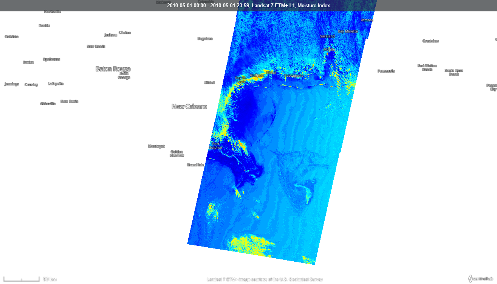
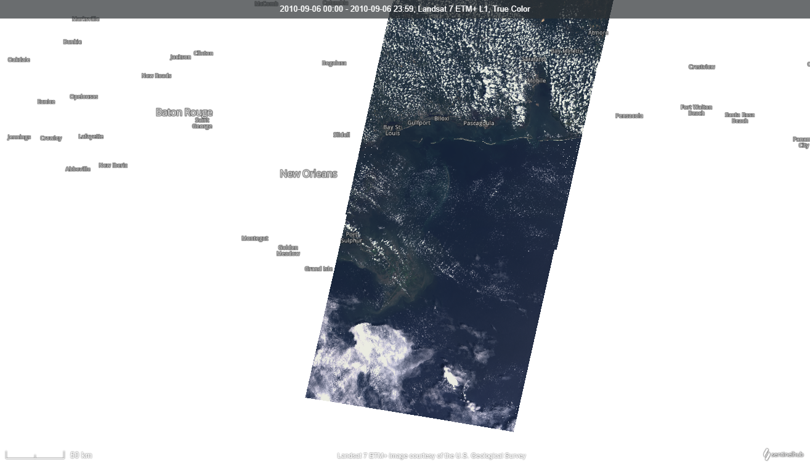
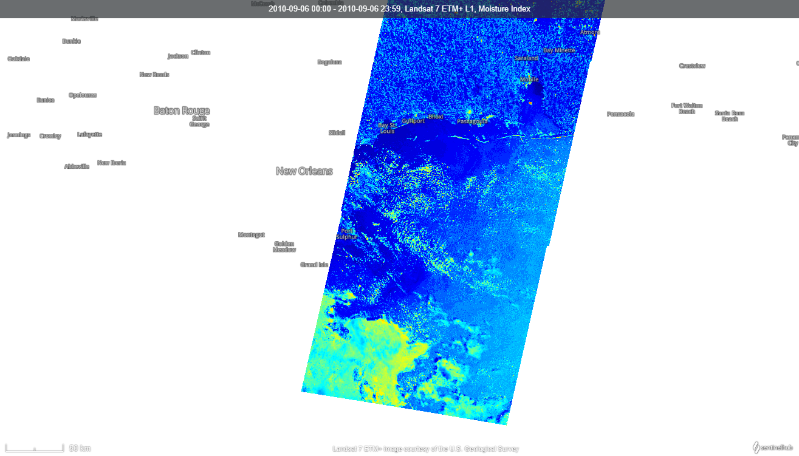
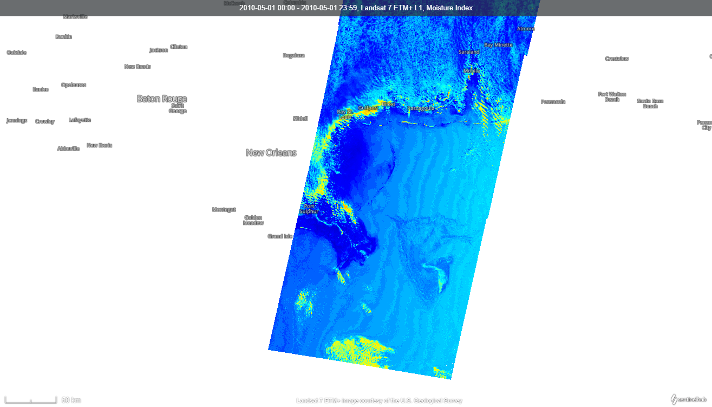
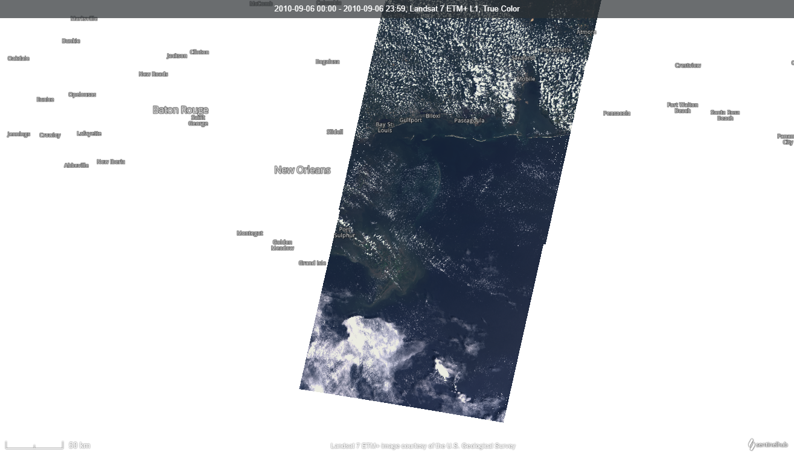
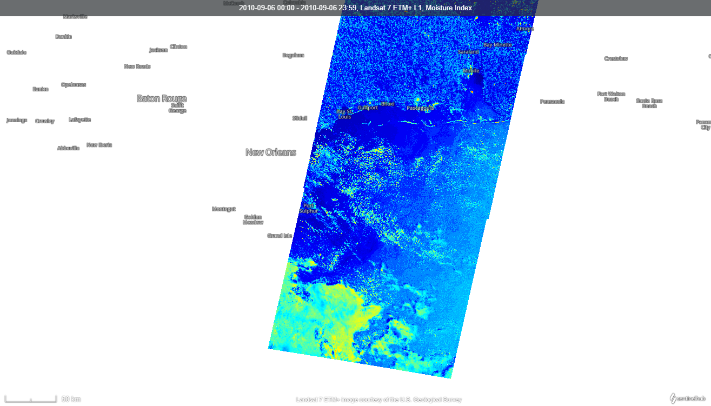

Deepwater Horizon
Cos'è
La Deepwater Horizon è una piattaforma petrolifera costruita in corea del sud nel 2001.

Piattaforma petrolifera prima dello scoppio
Il Disastro
Il 20 Aprile 2010 a seguito di un blowout(esplosione di un pozzo petrolifero) ci fu una esplosione che causò la morte di 11 membri dell'equipaggio.
L'incendio
Lo scoppio della piattaforma causò diversi danni tra cui un incendio dichiarato inestinguibile che continuò per due giorni. Al termine dei quali il pozzo petrolifero ebbe la più grande fuoriuscita di petrolio della storia, con lo sversamento nel golfo del messico di circa 500miloni di litri di petrolio.
(fonte National Geographic)
La Deepwater Horizon il giorno dopo dello scoppio
Luogo dell'incidente
Golfo del messico
| Posizione | 25°N 90°W |
|---|
| Dimensioni |
|---|
| Superficie | 1,6milioni km^2 |
|---|---|
| Larghezza | 1500km |
| Lunghezza | 1500km |
| Stati confinanti |
|---|
| Nord | Stati Uniti |
|---|---|
| Sud | Messico - Cuba |
| Est | Cuba - Stati Uniti |
| Ovest | Messico |
| Mari - Oceani confinanti |
|---|
| Est | Oceano Atlantico |
|---|---|
| Sud | Mar dei Caraibi |
Proprietà della piattaforma
Bandiera Isole Marshall
La Deepwater Horizon al momento del disastro era di proprietà della società Transocean
che in quel momento batteva una bandiera di comodo delle isole di Marshall.
La Transocean è una società di perforazione con sede a Houston, Texas.
È tra i più grandi fornitori di servizi di perforazione di pozzi petroliferi e gas al mondo.
Dopo lo scoppio la società dovette ripagare miliardi di dollari per le violazioni della CLean Water Act.
La Clean Water Act è una legge statunitense che va a regolare l'inquinamento delle acque.
Ha l'obbiettivo di regolare l'inquinamento delle acque della nazione
Gli effetti sulla Flora e sulla Fauna
Dando una piccola introduzione, la fuoriuscita di petrolio ha avuto un impatto devastante sulla flora e fauna del Golfo del Messico.
Gli uccelli marini, i pesci e le tartarughe sono stati tra le vittime più colpite.
Le alghe e le piante acquatiche hanno subito danni significativi, compromettendo l'ecosistema marino.
Dopo un decennio vediamo che la fauna marina ha iniziato a riprendersi come, ad esempio, i pesci menhaden e i pellicani bruni.
Altre specie come i coralli di acque fredde o le trote di mare sono ancora in difficoltà.
Parlando invece delle specie più longeve come i delfini, le tartarughe marine o le balene non possiamo ancora dire che impatto ha avuto su di loro il disastro.
Una ricerca recente ha però constatato una situazione allarmante.
A causa dell'ingerimento delle tossine rilasciate dal petrolio, circa un migliaio di delfini sono morti, mentre molti altri sono stati male.
Si è poi rilevato che solo il 20% delle gravidanze dei delfini di quella zona va a buon fine, rispetto al 83% delle zone in cui non c'è il petrolio.
Per non parlare poi delle diverse patologie polmonari e cardiache. Le stesse che l'essere umano che è venuto a contatto con lo sversamento presenta.
Nonostante la precedente situazione allarmante per i delfini, possiamo invece dire che anche se sono stati colpiti tra i 100.000 e il milione di uccelli marini, la loro popolazione è in forte ripresa.
Questo forte aumento della popolazione è dovunto anche grazie ad un programma di recupero per queste specie.
Il programma è stato particolarmente ben accolto dai pellicani bruni e qualche altra specie che hannno dimostrato un aumento della nidificazione del 20%.
Mentre molte specie diventanvano in pericolo di estinzione, si è notato un fenomeno opposto per alcune spercie di pesci.
Infatti, il pesce menhaden ha visto un aumento della sua popolazione del 50% negli anni successivi alla tragedia. La causa più plausibile per ciò è ovviamente la drastica diminuzione degli uccelli marini e l'impossibilità alla pesca.
Non si può dire lo stesso per tutte le specie, difatti possiamo dire, ad esempio, la popolazione degli storioni è crollata di ben due terzi.
Altre specie come le trote di mare hanno dimostrato una ridotta riproduzione visto che il loro ambiente è diventato tossico per le loro larve.
Una particolare attenzione per le Tartarughe Kemp
Durante lo sversamento di petrolio il 51% delle tartarughe colpite erano tartarughe Kemp. Uno studio stima che vennero colpite almeno 402,000 tartarughe.
Prima del disatro queste tartarughe potevano vantare di una crescita del 19% all'anno, ora invece si stima che la nidificazione sia crollata del 35% con un uteriore calo nel 2013.
Arriviamo quindi a dire che, al giorno d'oggi, questa specie è in uno stato di pericolo di estinzione critico.